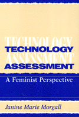

How gender analysis should inform technology assessment
How gender analysis should inform technology assessment


 How gender analysis should inform technology assessment
How gender analysis should inform technology assessment

|  |
Technology AssessmentA Feminist PerspectiveJanine Marie Morgallpaper EAN: 978-1-56639-091-0 (ISBN: 1-56639-091-5) |
How well does technology assessment (TA) relate to women's lives? If women are underrepresented in the long-term research and development process that leads to scientific advancements, how can TA understand technology aimed at women? It can't, claims the author of Technology Assessment: A Feminist Perspective.
A relative new field, TA examines the social aspect of technology and provides information critical to decision making, policy development, safety standards, and avoiding litigation. Until gender analysis is introduced into all assessments of new technologies, Janine Marie Morgall argues, TA can't evaluate technology's impact upon women.
Morgall investigates two areas of technology that affect women's lives: productive (clerical work) and reproductive (health care). Case studies of clerical workers and health care recipients illustrate gender-specify effects of technology ranging from word processors to treatments for infertility. These studies convincingly demonstrate that TA encourages innovations without questioning their effects on women. Issues of dominance, control, and conflicting values emerge from Morgall's feminist perspective and support her call for gender analysis of new technologies.
Acknowledgments
Abbreviations
Introduction: On the Importance of Gender Analysis
Part I: Technology Assessment
1. Evolution
2. Organization
3. Methods and Their Limitations
4. Problems Perceived by Proponents
Part II: Women and Technology
5. A Feminist Perspective on Technology
6. A Feminist Approach to Assessment
Part III: Women and Technology: Examples
7. The Clerical Sector
8. Reproductive Technology
Conclusion: Drawing Out Criteria for a Critical Feminist Approach
Notes
Bibliography
Index
Janine Marie Morgall is Assistant Professor at the Institute for Social Pharmacy in Copenhagen. She has worked as a consultant for the World Health Organization, specializing in women's health issues and appropriate health care technology.
General Interest
Women's Studies
Labor Studies and Work
Labor and Social Change, edited by Paula Rayman and Carmen Sirianni.
Labor and Social Change, edited by Paula Rayman and Carmen Sirianni, includes books on workplace issues like worker participation, quality of work life, shorter hours, technological change, and productivity, as well as union and community organizing and ethnographies of particular occupations.
© 2015 Temple University. All Rights Reserved. This page: http://www.temple.edu/tempress/titles/964_reg.html.